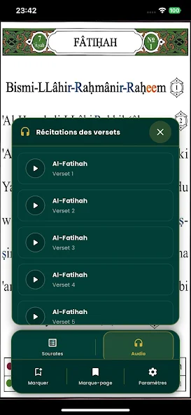
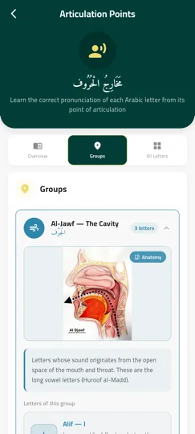
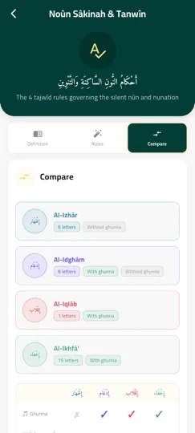
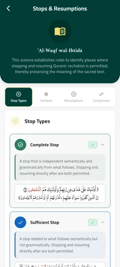

Pourquoi le Tajweed est important
Le Tajweed est l'ensemble des règles qui garantissent une récitation correcte du Coran : prononciation précise de chaque lettre, allongements, liaisons, et endroits où l'on peut s'arrêter ou reprendre sa lecture. Réciter sans respecter le Tajweed peut altérer le sens du texte.
Noor Phonetic Quran rend ces règles visibles et compréhensibles, avec des couleurs pendant la lecture et des guides détaillés pour approfondir chaque notion.
Ce que propose l'apprentissage du Tajweed
- Texte coloré et annoté — les couleurs et annotations guident votre récitation directement sur le texte du Coran, selon les règles correctes du Tajweed.
- Points d'articulation (Makharej) — apprenez la prononciation correcte de chaque lettre arabe à partir de son point d'articulation, avec des schémas anatomiques.
- Noun Sâkinah et Tanwîn — les 4 règles régissant le noun sâkinah et le tanwîn (Izhâr, Idghâm, Iqlâb, Ikhfâ') expliquées et comparées visuellement.
- Waqf et Ibtidā — les règles qui identifient les endroits où l'arrêt et la reprise de la récitation sont permis, pour préserver le sens du texte.
Aperçu des règles de Tajweed




Questions fréquentes sur le Tajweed
Qu'est-ce que le Tajweed ?
Le Tajweed est l'ensemble des règles qui régissent la prononciation correcte du Coran : allongements, liaisons, points d'articulation des lettres et règles d'arrêt et de reprise de la récitation.
Comment l'application enseigne-t-elle le Tajweed ?
Le texte du Coran est coloré et annoté selon les règles de Tajweed pendant la lecture, et des guides détaillés expliquent chaque règle : points d'articulation, Noun Sâkinah et Tanwîn, ainsi que les règles de Waqf et d'Ibtidā.
Le Tajweed est-il adapté aux débutants ?
Oui, chaque règle est expliquée avec des définitions simples, des exemples et des comparaisons visuelles pour faciliter l'apprentissage, même sans connaissances préalables.